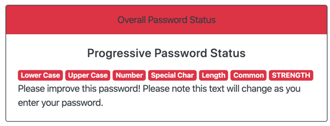

The Password Strength Checker overall process is described by the flow
diagram below. Whenever the Home page is accessed the Password Strength
Checker becomes active with the password input initally set to null.
Before any input from the user the system accesses the Hue Lights and
sets all 6 to ON with a hue of RED (65536)
Once the user starts to enter a password, each time a character is added
or deleted the checker runs through all of its processes to check the
strength of the current password. So as each character is added the
light pattern may change as the password grows in strength.
The Hue Lights Key page shows what the light patterns mean. As can be
seen from the flow diagram the system checks the password for:
-
Contains lower case character (Green if YES; RED if NOT)- Light 1
-
Contains upper case character (Green if YES; RED if NOT)- Light 2
- Contains a numeral (Green if YES; RED if NOT) - Light 3
-
Contains a special character (Green if YES; RED if NOT) - Light 4
-
Is at least 8 chars long (Green if YES; Yellow if 6 or 7, Red if 5 or
fewer chars) - Light 5
-
Overall status including a check for common password names (Green,
Yellow or Red depending on Strength count) - Light 6
As the Hue lights may not always be present a local Strength Status
Checker has been included beside the password input on the Home page to
show the expected Hue Lights output.
The Local Strength Indicator
